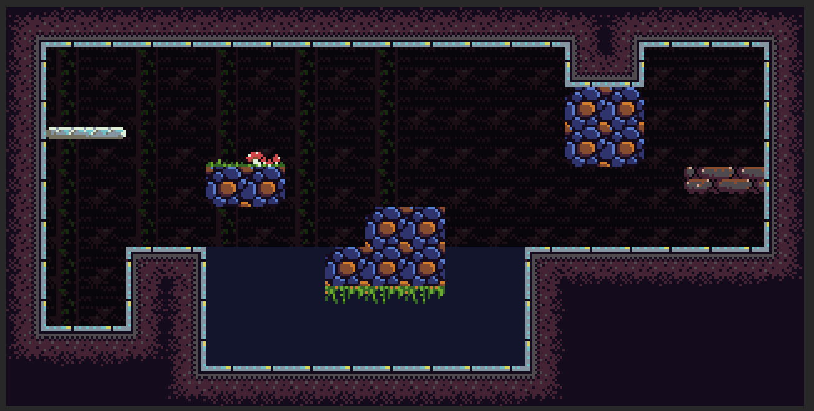
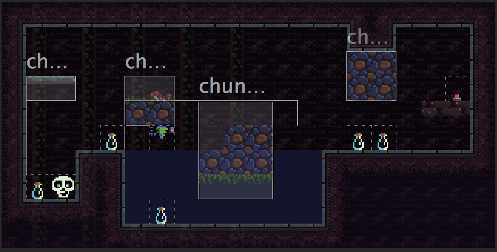

Spooky Pooky #10 - Map Building
How I use Tiled to build rooms.
Published on 04 Oct 2014 by Joe
Given that this is supposed to be a dev log there's not been much about the actual dev; so I thought I'd stick some notes down about how I'm designing levels.
I'm using the Tiled Map Editor to create levels which is a wonderfully flexible tool.
Below are a couple of screenshots - the first shows a tile layer containing the actual scenery tiles:

The second is an object layer:

In the second you can see some boxes which are used to outline blocks of tiles in the layer below that should be separated from the main layer and turned into an independent entity.
I then use properties on these rectangle objects to define various flags as to how the object behave - e.g. fixed in space, affected by gravity. Additionally they can be any entities can be programmed to follow paths. This is done by drawing a path using as a polyline object and relating the two together by name using a 'path' property on the parent object.
I use a similar approach to associate buttons (which are just tile objects) with, for example, a laser forcefield, or with a block entity.
I use a third layer for liquid which I indicate using a simple tile. In the game I use the presence of this tile to set flags on the underlying tiles to indicate they are in water. I render the water using two passes - one to render the water using a simple shader (the water can be at any level) into a framebuffer and another to compose it with the background to add the wibble shader effects.
It's a pretty flexible system - I can also tell entities (i.e. Tiled objects) that they 'belong' to a section of scenery by specifying it's name as a 'ground' property.
Overall I'm pretty impressed by Tiled as I had assumed that I'd end up writing some kind of proprietary format or tool - so far it's not been necessary.